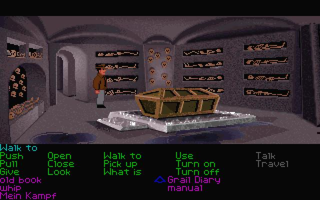
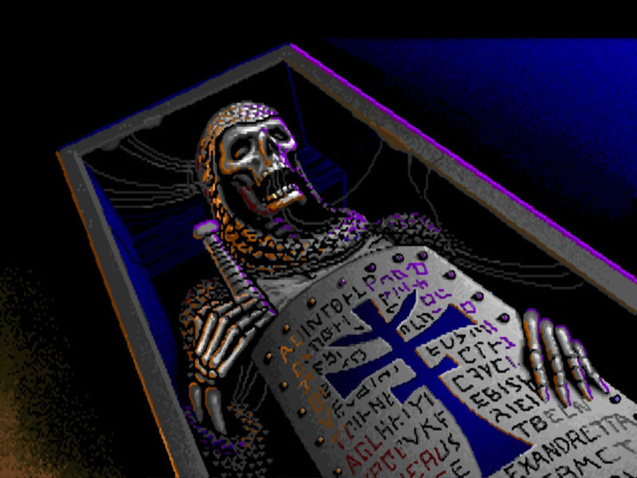
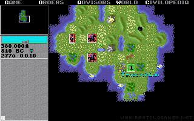
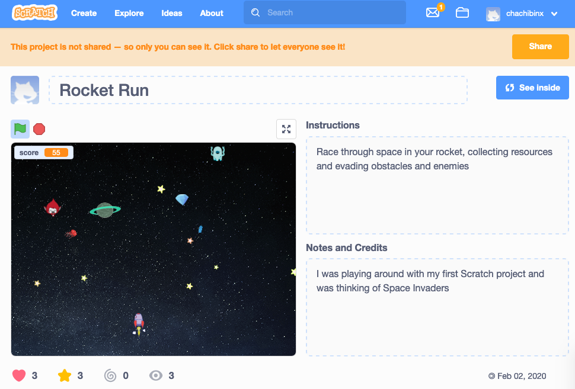

My interest in IT started with the first computer my father brought home in the 1990s. Firstly, it was the biggest cardboard box I had ever seen, and immediately became the most awesome robot costume. But long after the cardboard box had gone I would look over my brother's shoulder as he played classic games like Where In the World is Carmen Sandiego? and Indiana Jones and the Last Crusade. A scene from Indy in the catacombs of Venice gave me nightmares for years!
 Cue nightmares
Later I got hooked on the original Sid Meier's civilization, which has given me a lifelong love of history. Many a highschool assignment was completed while alt-tabbing to Civilization when my parents walked in.
Watch out Aztecs! The barbarian horde is approaching!
It was in Civilization 2 that I discovered I could manipulate files to alter certain components of the game. I marvelled at the power of this tweaking, and found it particularly gratifying because it was something I discovered myself, and that my brother didn't know how to do. Unfortunately, my school had an uninspiring computer science department and so I drifted more into the traditional sciences and then life got in the way.
I often daydreamed about a computer-based job where my day was spent brainstorming with colleagues and solving real world problems with computing power. In 2020 I signed up for CS50x and was instantly hooked. I poured hours into a space invaders type Scratch game. I loved learning to code, the methodical and precise language, and the tricks that could unleash powerful programming. But with the unsettling events of 2020 and the lack of support that this free online course offered, I eventually hit a difficult hurdle that I was not able to surmount.
I have chosen to study at RMIT because I believe with the excellent academic and peer support, this time around I will be able to progress further. A qualification from a respected institution like RMIT, whether it be an Undergraduate Certificate or even a Bachelor Degree, will give me a solid foundation as an IT professional. The job-ready focus of RMITs courses, as well as its links to industry, give me confidence that this is the right first step in a fulfilling career change.
My early affinity with programming indicates I could look forward to a future in this area of the IT industry. I also have a passion for self-driving cars, as I believe humans are not well qualified to be behind the wheel of a fast moving vehicle, and there are many more useful activities a human could be doing while moving around the planet. I would be interested in studying cyber security as well. I value integrity and ethics and would like to contribute to making the online world a safe and secure place for all people.
I am excited to learn the basics of programming, and the building blocks to make me a self-directed learner in this area, able to learn new languages as required. I am also looking forward to exploring the vast universe of IT, understanding all its different applications, and the many fields of employment available. I already love the passion that IT people share for progress, innovation and problem solving.
Return to homepage